| ・ （社）日本機械学会関西支部 第92期定時総会講演会＠大阪大学吹田キャンパス (H29.03.13-14) | |||
去年は2人で今年も2人です．音響計測の研究でM1のF井くんが「可変空間スケールマイクロフォンアレイの近接場音響ホログラフィへの適用」，光計測の研究でM1のY岡くんが「位相回復法を用いたディジタルホログラフィ法によるフィルム欠陥検出のための光位相分布計測」をポスター発表しました．今年は吹田で定時総会です．ポスターの採点は学生同士の相互評価やシール貼付でポイントが可視化されるという取り組みがありました．今回は3室と廊下がポスター会場です．ポスター掲示位置が会場の端っこだった場合，採点者が辿り着く前にシールが無くなっていたりしました．数も増えてきましたし，なかなか大変です．作ったポスターに今年から顔写真を入れることにして，誰が説明担当か分かるようにしました．この時期だと就職活動で履歴書用にプロが撮った写真があるのでちょうど良いです． |
|||
|
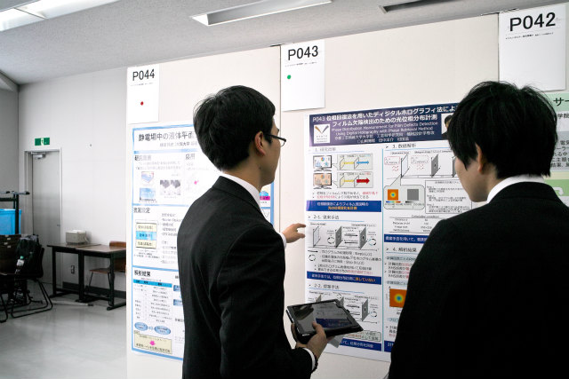
タブレットで補足資料や動画を使って説明 |
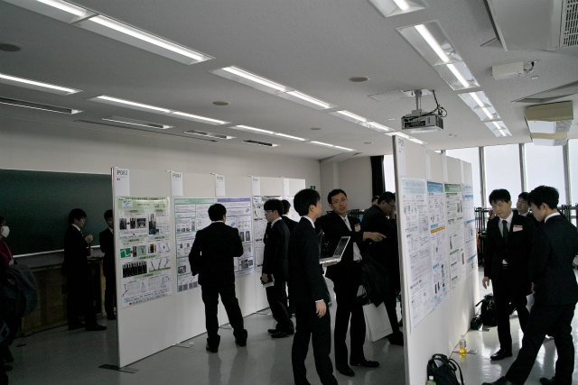
室内は3部屋にわかれています | ||
|
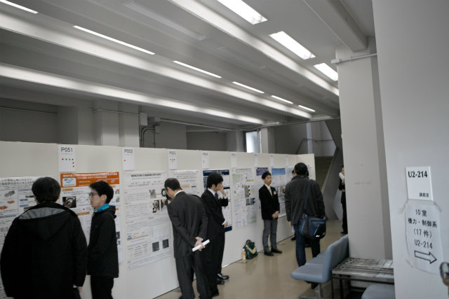
3部屋繋ぐ廊下．人通り多くて有利． |
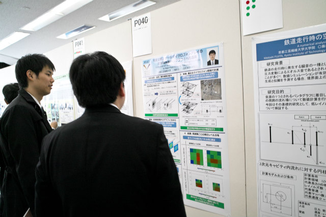
補足資料を忘れてピンチ | ||
|
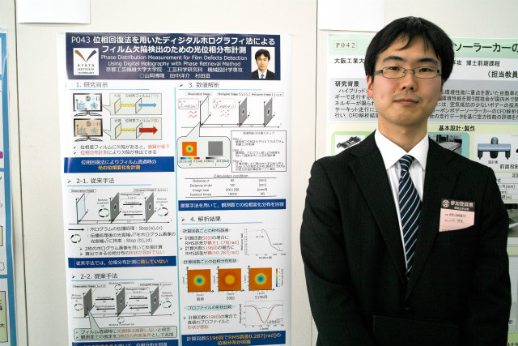
ポスターは眼鏡無しバージョンの写真 |
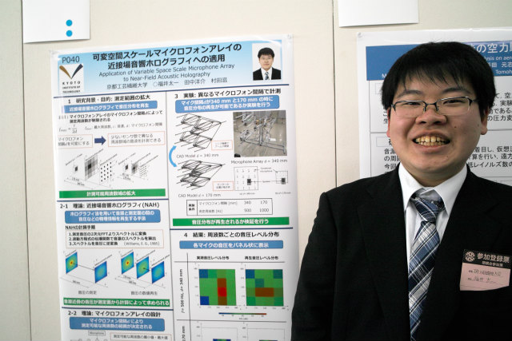
ポスターはシュッとしてる写真 | ||
|
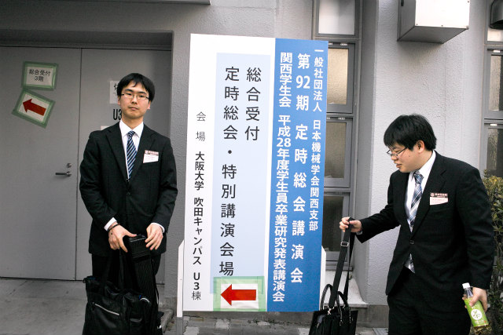
定番写真 |
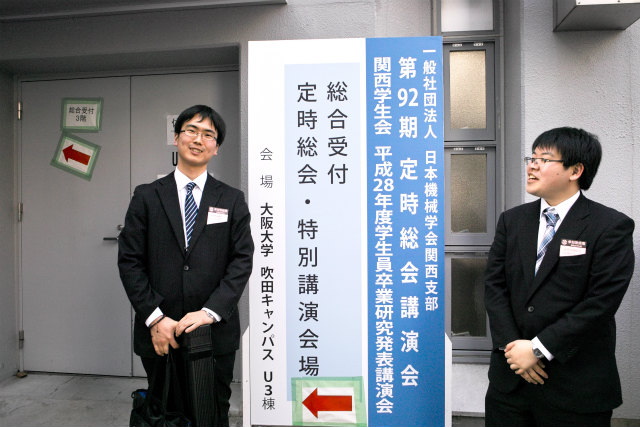
研究テーマに関係するポーズ | ||
|
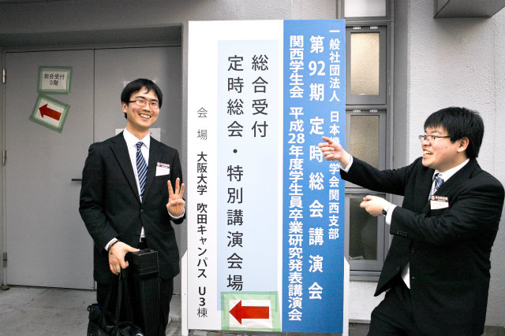
3拘束，傘が開くイメージ |
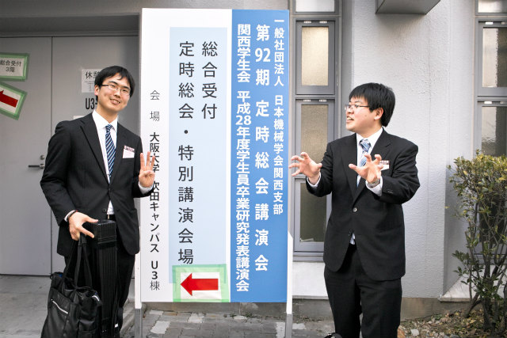
マイクロフォンアレイっぽくして | ||
|
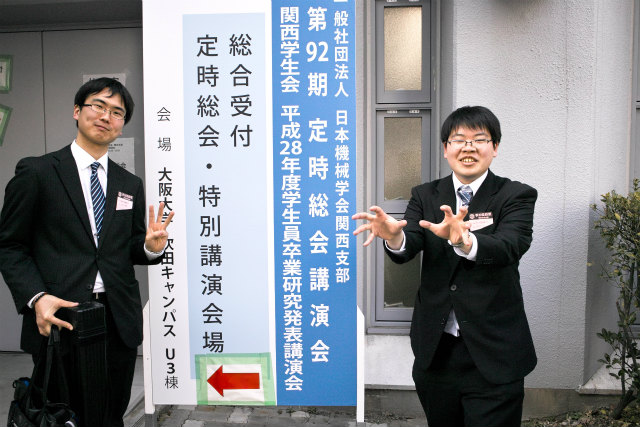
あと8つ足りない |
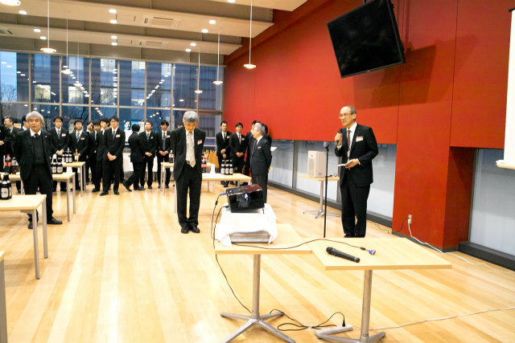
田中先生挨拶 | ||
|
乾杯 |
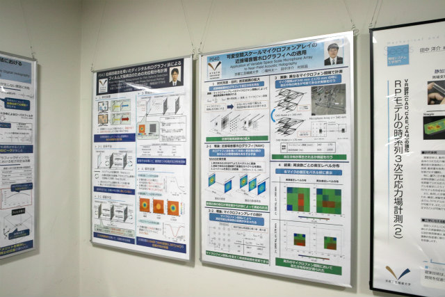
さっそく次の日に掲示 | ||